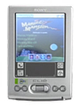

ScummVM Palm
Archivierte Anleitung
Dieser Artikel wurde archiviert, da er - oder Teile daraus - nur noch unter einer älteren Ubuntu-Version nutzbar ist. Diese Anleitung wird vom Wiki-Team weder auf Richtigkeit überprüft noch anderweitig gepflegt. Zusätzlich wurde der Artikel für weitere Änderungen gesperrt.
Zum Verständnis dieses Artikels sind folgende Seiten hilfreich:
Mit ScummVM für das PalmOS laufen Adventures auch auf einem PDA. Da ScummVM eine Sammlung von Interpretern für einige Adventure-Game-Engines ist, können Adventure-Klassiker nicht nur auf einem Linuxsystem sondern auch auf einem PDA zum Laufen gebracht werden. ScummVM unterstützt derzeit eine Reihe von Point & Click Adventures  .
.
|  |
| ScummVM |
Voraussetzungen¶
Um das Programm zu installieren gelten folgende Voraussetzungen:
eine bestehende Installation eines Synchronisationstools für den PDA
ein Kartenlesegerät für die Speicherkarte des Palms (optional),
ein PDA mit PalmOS 5,
eine Auflösung von mind. 320 x 320 Pixeln am Palm,
eine ausreichend große Speicherkarte sowie
die Originalversionen der unterstützten Spiele
.
Installation¶
ScummVM¶
Von der Projektseite oder von capers.free.fr eine aktuelle Version von ScummVM herunterladen. Dieses Paket in einem Ordner entpacken [2]. Nun die Dateien ScummVM-Frontend.prc und skin.pdb auf dem Palm installieren [1]. Via Synchronisation werden diese beiden Programme auf den Palm übertragen. Nun können die Spiele auf die Speicherkarte kopiert werden. Um zu erfahren, welche Spiele von der aktuellen Version unterstützt werden, finden sich Informationen diesbezüglich in der Datei Readme, welche im entpackten [2] Verzeichnis zu finden ist.
Hinweis:
ScummVM für den Palm steht nur bis Version 0.11.1 als Download zur Verfügung.
| Skin |
Speicherkarte¶
Vorbereitung¶
Folgende Schritte sind auf der Speicherkarte zu erledigen:
Engines¶
Auf der Speicherkarte das Verzeichnis /Palm/Programs/ScummVM/Mods/ anlegen und die Dateien für die zu unterstützenden Spiele kopieren:
| Engines | |
| Engine | unterstützte(s) Spiel(e) |
| scumm.engine | Scumm Spiele |
| saga.engine | SAGA |
| sky.engine | Beneath a Steel Sky |
| kyra.engine | Legend of Kyrandia |
| gob.engine | Gobliiins |
| simon.engine | Simon the Sorcerer |
| queen.engine | Flight of the Amazon Queen |
Spieleordner¶
Nun den Ordner /Palm/Programs/ScummVM/Games/ erstellen. In diesen Ordner werden die Adventures abgelegt. Es empfiehlt sich einen Ordner für jedes weitere Spiel anzulegen, z.B. /Palm/Programs/ScummVM/Games/DOTT für Day of the Tentacle, /Palm/Programs/ScummVM/Games/MI für Monkey Island et cetera.
Da der Speicherplatz auf den meisten Karten nicht sehr groß ist, empfiehlt es sich die überflüssigen Spieledateien nach dieser Liste zu sondieren - eine weitere Hilfe bieten die ScummVM-Tools. Sie gestatten es Audiodateien in ein anderes Format (z.B. flac, mp3 oder ogg) in niedriger Bitrate zu konvertieren und anschließend zu komprimieren - dies spart Speicherplatz.
Für Day of the Tentacle werden laut Liste nur diese Dateien benötigt:
TENTACLE.000
TENTACLE.001
MONSTER.SOU (Nur wenn Audioausgabe gewünscht.)
Diese Schritte so lange wiederholen bis alle gewünschten Spiele aufgespielt sind. Einige Original-Spiele benötigen darüber hinaus noch eine weitere Datei um unter ScummVM zu laufen:
| Original-Spiel | |
| Spiel | benötigte Datei |
| Flight of the Amazon Queen | queen.tbl (Nur für die Original-Version des Spieles benötigt.) |
| The Legend of Kyrandia | kyra.dat (Für jedes Spiel benötigt.) |
| Lure of the Temptress | lure.dat (Nur für die Original-Version des Spieles benötigt.) |
Diese können von ScummVM.org heruntergeladen und in den Spieleordner kopiert werden.
Spiele die Audio-CD-Unterstützung nutzen können als mp3-Dateien im Ordner des jeweiligen Spiels abgelegt werden. Sie müssen jedoch nach folgendem Schema benannt werden: track1.mp3, track2.mp3 ....
Palm¶
Konfiguration¶
Nach dem Start von ScummVM ist die Liste erst einmal leer. Um ein Spiel hinzuzufügen geht man wie folgt vor:
"Add",
Entry name: hier den Spielenamen eingeben z.B.:
DOTT,Path: den unter Vorbereitung gewählten Pfad - z.B.: "DOTT/",
Game: hier den Startbefehl aus der Readme eingeben - z.B.:
tentacle,Engine: die passende Engine wählen z.B.
Scumm Games."OK"
Hinweis:
Je nach Bedarf können noch weitere Einstellungen unter "Display" oder "Options" vorgenommen werden.
Die Grundinstallation des Spieles sind somit erledigt. Es folgen die Audioeinstellungen:
Audioausgabe¶
Im Menü das Spiel anwählen (farblich hinterlegt), anwählen und "Music & Sound" wählen. Hier können die unterschiedlichsten Einstellungen vorgenommen werden.
Sound¶
Im Reiter "Sound" ein Häkchen [x] setzen bei "Enable audio" und bei "Mixed Adlib/MIDI mode". Als "Driver:" Adlib wählen. Man sollte hier ruhig experimentierfreudig sein bis das beste Ergebnis gefunden wurde. Dies testet man durch Starten des Spiels.
Volume¶
Unter "Volume" kann die Lautstärke für die Musik, den Sound, die Sprachausgabe, den Palm sowie von der Audio-CD angepasst werden.
Audio CD¶
Hat man Spiele mit Mp3s auf der Karte abgespeichert, sollte man unter "Audio-CD" ein Häkchen setzen bei [x] "Enable audio CD emulation". "Driver:" No CD - "Format:" MP3.
Ist alles fertig eingestellt auf "OK" klicken und dem Spielen steht nichts mehr im Wege.
Skin¶
Um das im Vorfeld auf den PDA übertragene Skin zu nutzen öffnen und unter "Options -> Skins..." das gewünschte Skin auswählen.
Einstellungen¶
Im Menü "Options -> Misc" können weitere Einstellungen zum Palm oder ScummVM vorgenommen werden.

- Erstellt mit Inyoka
-
 2004 – 2017 ubuntuusers.de • Einige Rechte vorbehalten
2004 – 2017 ubuntuusers.de • Einige Rechte vorbehalten
Lizenz • Kontakt • Datenschutz • Impressum • Serverstatus -
Serverhousing gespendet von